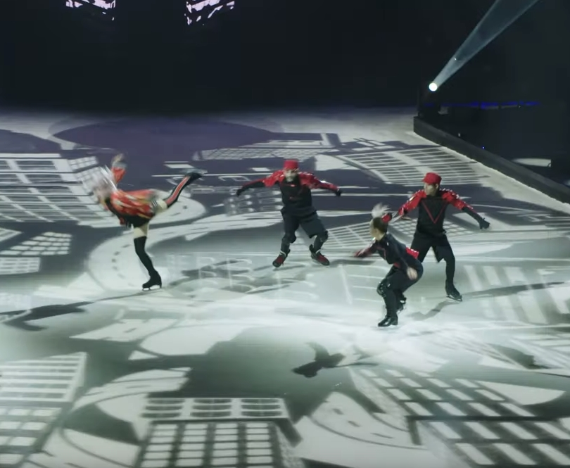
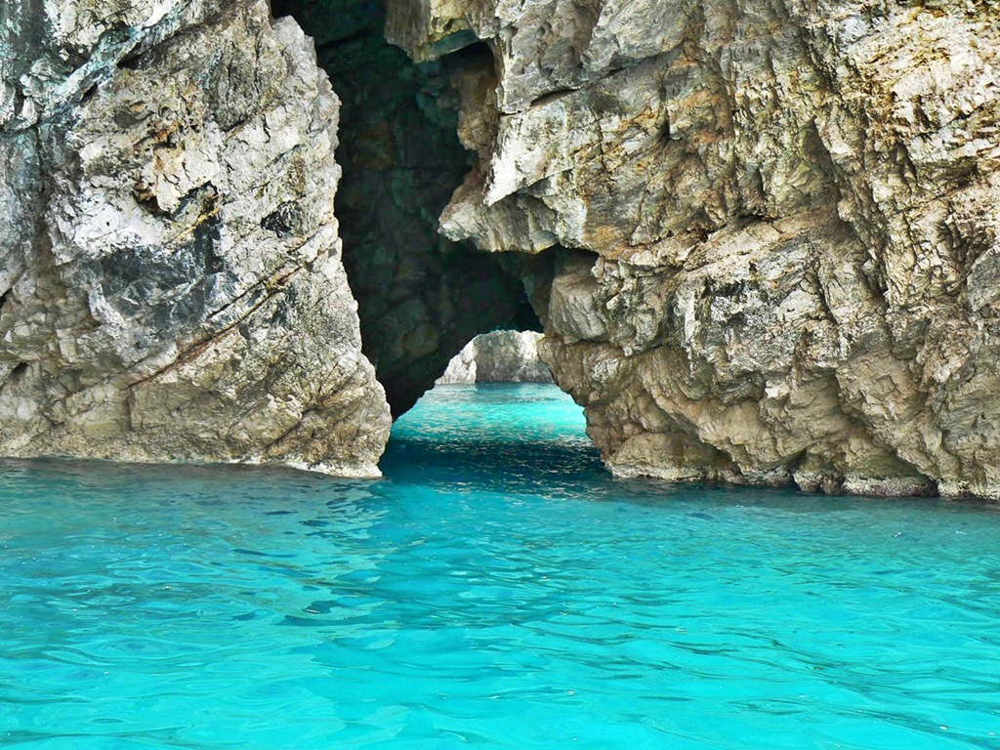
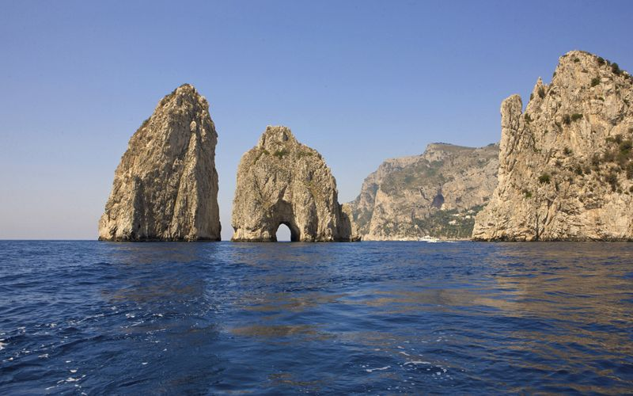

기존의 서커스를 탈피해 여러 예술 분야를 혼합한 새로운 개념의 엔터테인먼트라고 소개해서 2번 관람했습니다 . 미국 LA에서 고정적으로 공연하던 Iris, 전세계 순회 공연하던 퀴담을 보았는데 둘 다 훌륭했습니다.
.둘 다 현재 종료된 쇼인데 종료된 쇼의 퀄리티가 그 정도라면 라스베거스에서 꾸준히 진행하고 있는 오, 쥬메니티, 미스티어 등의 쇼는 얼마나 훌륭할지 기대됩니다.
새로운 개념의 공연을 계속 선보이는 태양의 서커스에서 피겨를 도입한 공연 Axcel입니다. 아이스링크에서 스케이트를 타고 공연을 선보입니다. 전직 피겨 선수였던 한국인 박소연씨가 Axcel에서 배우로 활동 중이라고 합니다.

동영상 링크
페리를 타고 섬 주변을 한 바퀴 도는 투어에서 Green Grotto를 만났습니다.

섬 주변을 도는 페리 투어에서 Faraglioni 바위도 인기있습니다.

아우구스투스의 정원은 정원 내부도 볼만하지만 정원에서 내려다보는 바다 절경이 환상적입니다.
카프리 섬에는 예쁜 건물, 예쁜 꽃이 많습니다. 부자들의 별장이 많고 고급스러운 인테리어의 매장이 많아 건물 구경하는 재미도 있습니다.
그래서 카프리는 자연 경관과 건물 모두 훌륭한 섬입니다. 왜 로마 황제들이 카프리 섬을 사랑했는지 알 것 같습니다.